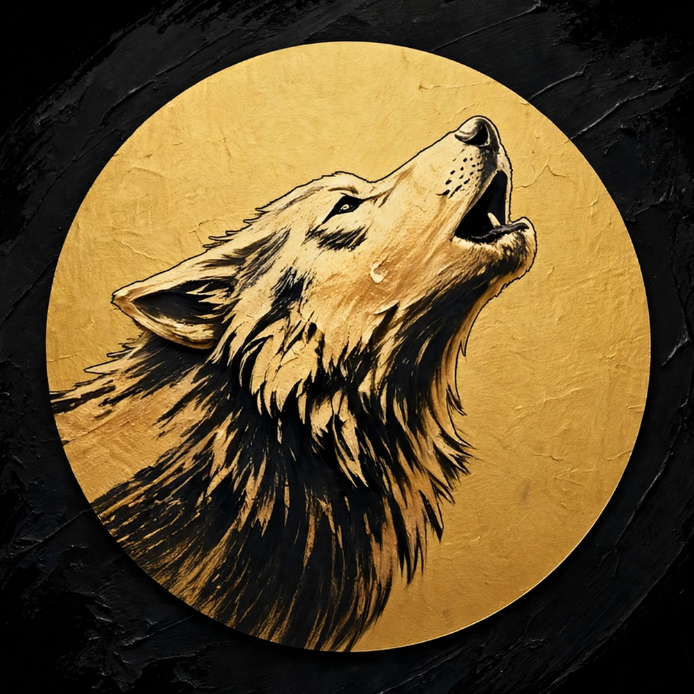

From my den to your home
On the Needles: Grandmother's Favorite Washcloths
The beanies have had the spotlight since the shop relaunched, so it's time the needles took on something new: washcloths are going on the needles next, starting with the set I trust most — Grandmother's Favorite.
If you've never met it, Grandmother's Favorite is the classic dishcloth pattern — knit diagonally in garter stitch, with a little eyelet border that runs all the way around. Generations of knitters have made these by the dozen, and there's a reason: it's the easiest of the three washcloth patterns in my lineup, there's almost nothing to keep track of, and it has a proven track record in every kitchen it's ever landed in. Increase to the middle, decrease back down, done.
The set
Three cloths, hand-knit on needles in Loops & Threads Classic Cotton (100% cotton, worsted weight), one in each color:
- Burgundy
- White
- Olive Garden
Each cloth finishes at about 7.5" square — sturdy, absorbent, and softer with every wash. When the set is off the needles and photographed, it'll be listed in the shop as a set of three.
Knit along — the pattern is free
Grandmother's Favorite belongs to everybody, so here it is if you'd like to make your own:
Cast on 4 stitches.
Row 1: Knit.
Row 2: K2, YO, knit to the end.
Repeat Row 2 until you have 44 stitches — that's the widest point.
Decrease row: K1, K2tog, YO, K2tog, knit to the end.
Repeat the decrease row until 4 stitches remain. Bind off, weave in the ends.
(US 7 / 4.5 mm needles are the usual match for worsted cotton. The yarn-over near the edge is what makes the eyelet border.)
Newer to knitting? My seed stitch washcloth pattern is another friendly place to start — and that one's already up on the blog, free as well.
Don't feel like knitting one?
That's quite literally why the shop exists. The finished set will land in the Wolven Fiber Co. shop as soon as it's ready — watch this space, or head over now for the loom-knitted baby beanies.
Visit the Shop